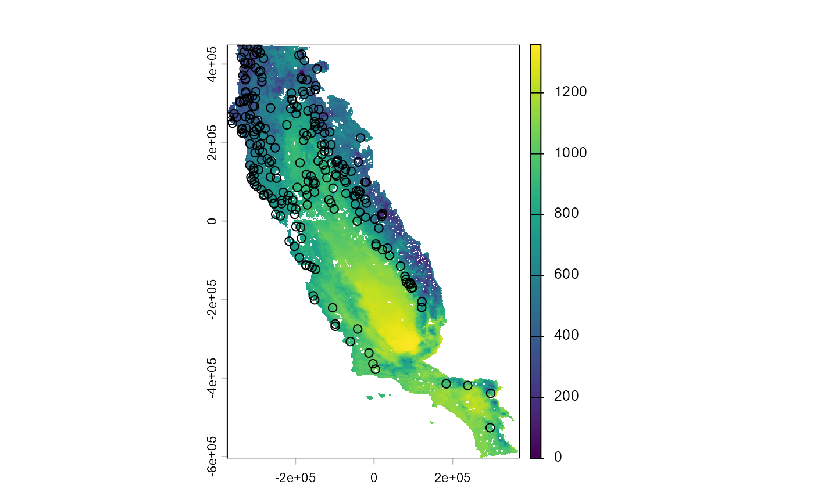
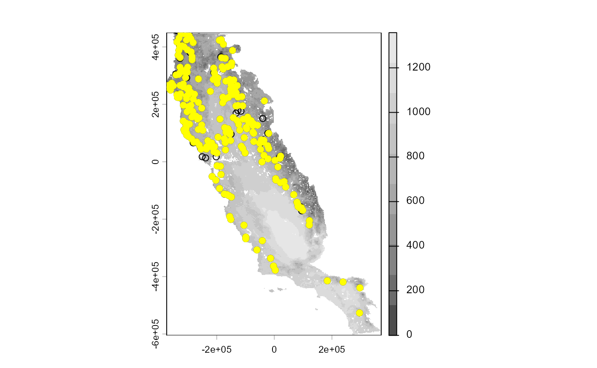
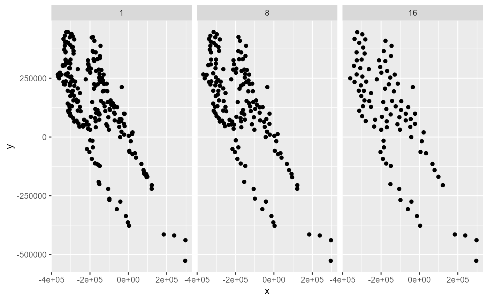
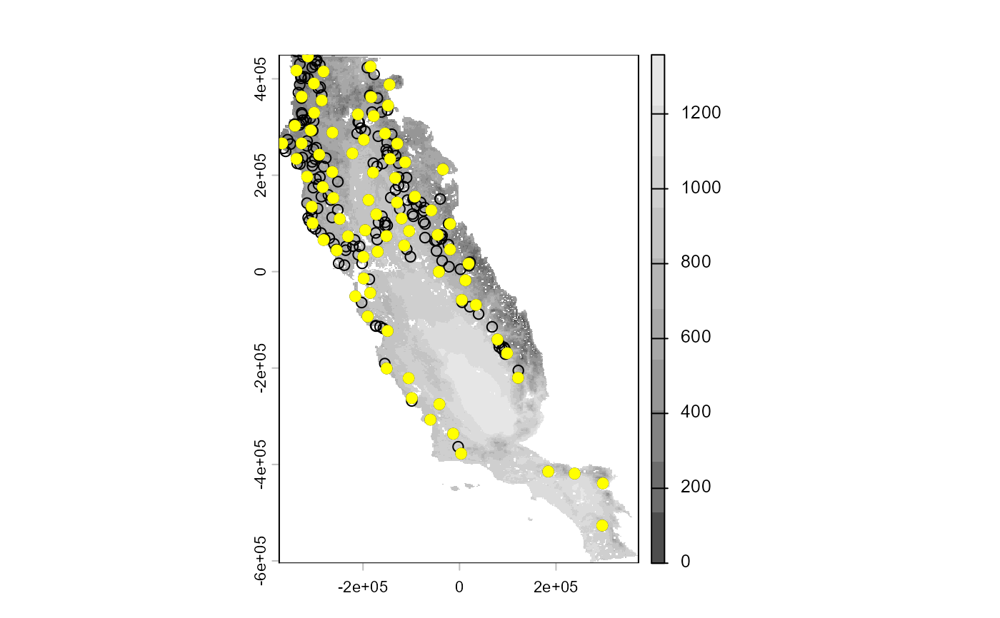
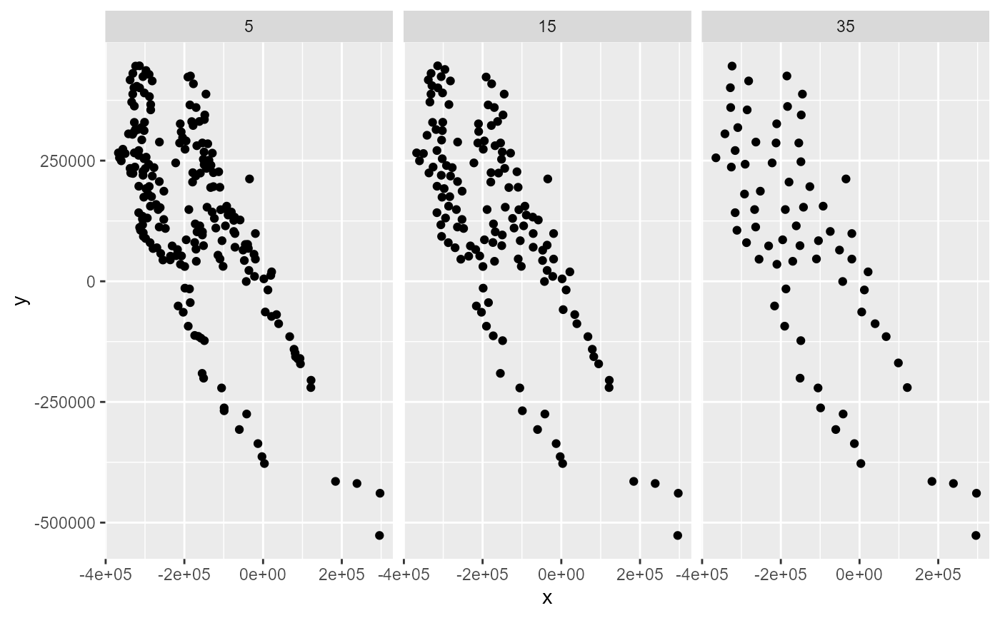
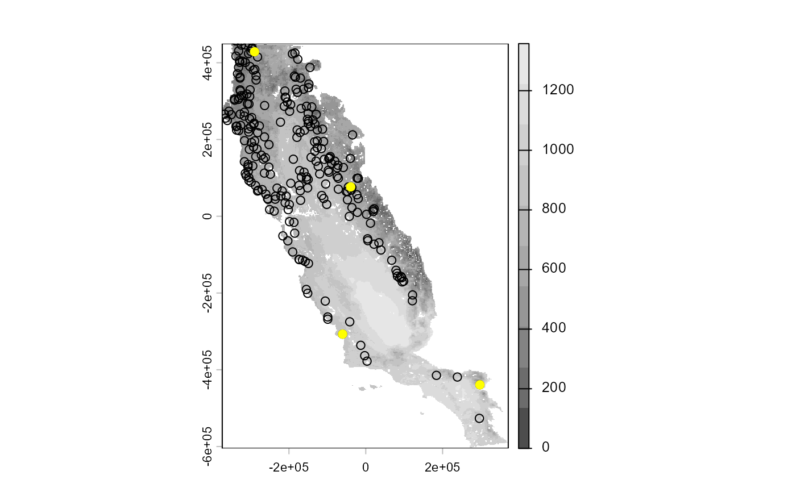
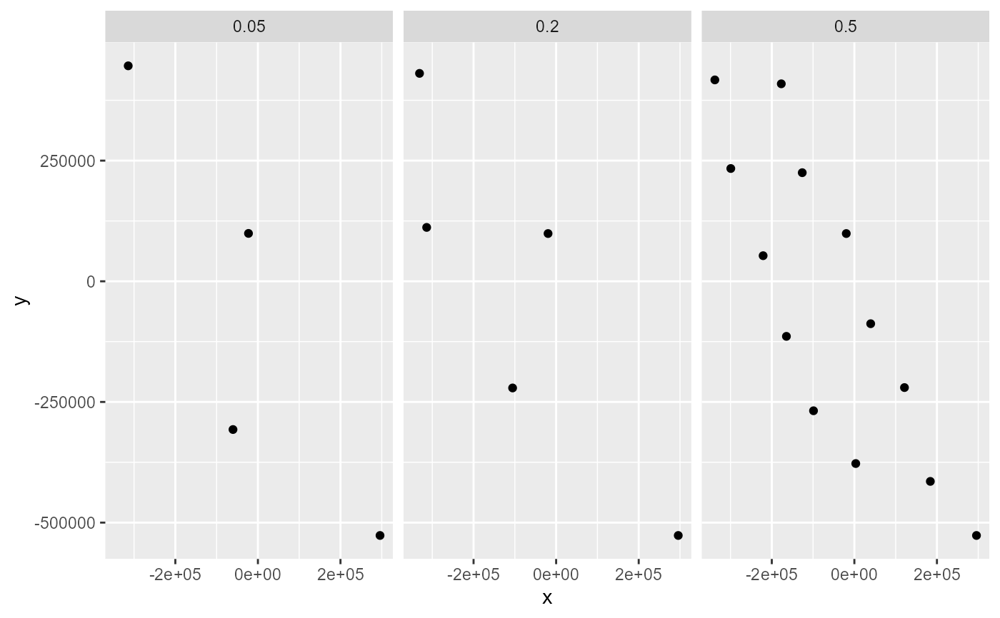

This function perform geographical filtering of species occurrences based on different approach to define the minimum nearest-neighbor distance between points.
Arguments
- data
data.frame. Data.frame or tibble object with presences (or presence-absence) records, and coordinates
- x
character. Column name with longitude data
- y
character. Column name with latitude data
- env_layer
SpatRaster. Raster variables that will be used to fit the model. Factor variables will be removed.
- method
character. Method to perform geographical thinning. Pairs of points are filtered based on a geographical distance criteria. For the three method, it is possible to use several values. If several values are provided, the function will return a list with the results. The following methods are available:
moran: records are filtered based on the smallest distance to the Moran's I value provided. If no Moran's I values is provided it will use 0.1. Usage method: method = c('moran') or method = c('moran', val = c(0.1, 0.15, 0.2, 0.25, 0.3, 0.35)).
cellsize: records are filtered based on the resolution of the environmental variables which can be aggregated to coarser resolution defined by the factor. Usage method: method = c('cellsize', factor = '2') or method = c('cellsize', factor = c(1, 4, 8)).
defined: records are filtered based on a distance value (d) provided in km. Usage method: method = c('defined', d = c(20, 40, 60, 80)).
- prj
character. Projection string (PROJ4) for occurrences. Not necessary if the projection used is WGS84 ("+proj=longlat +datum=WGS84"). Default "+proj=longlat +datum=WGS84"
- reps
integer. Number of times to repeat the thinning process. Default 20
Value
If one value is used to filter occurrence function will return a tibble object with filtered data. If several values are used to filter occurrences, the function will return a list of tibbles with filtered data.
Details
In this function three alternatives are implemented to determine the distance threshold between pair of points: '
"moran" determines the minimum nearest-neighbor distance that approximate to the spatial autocorrelation in occurrence data, following a Moran's I. To do so, a Principal Component Analysis with the environmental variables is performed and then the first Principal Component is used to calculate the semivariograms. Because of this, this method only allow the use of continuous variables. Sometimes, this method can (too) greatly reduce the number of presences.
"cellsize" filters occurrences based on the predictors' resolution. This method will calculate the distance between the first two cells of the environmental variable and use this distance as minimum nearest-neighbor distance to filter occurrences. The resolution of the raster is aggregated based on the values used in "factor". Thus, the distance used for filtering can be adjusted to represent a larger grid size.
"determined" this method uses any minimum nearest-neighbor distance specified in km.
The "thin" function from spThin package is used to filter data (Aiello-Lammens et al., 2015) with the following argument settings reps = 20, write.files = FALSE, locs.thinned.list.return = TRUE, and write.log.file = FALSE.
In the case that more than one value was used in some of the methods, it is possible to use
use occfilt_select function to automatically select a filtered database based on
number of records and spatial autocorrelation.
References
Aiello-Lammens, M. E., Boria, R. A., Radosavljevic, A., Vilela, B., & Anderson, R. P. (2015). spThin: An R package for spatial thinning of species occurrence records for use in ecological niche models. Ecography, 38(5), 541-545. https://doi.org/10.1111/ecog.01132
Examples
# \donttest{
require(terra)
require(dplyr)
require(ggplot2)
# Environmental variables
somevar <- system.file("external/somevar.tif", package = "flexsdm")
somevar <- terra::rast(somevar)
plot(somevar)
 # Species occurrences
data("spp")
spp
#> # A tibble: 1,150 × 4
#> species x y pr_ab
#> <chr> <dbl> <dbl> <dbl>
#> 1 sp1 -5541. -145138. 0
#> 2 sp1 -51981. 16322. 0
#> 3 sp1 -269871. 69512. 1
#> 4 sp1 -96261. -32008. 0
#> 5 sp1 269589. -566338. 0
#> 6 sp1 29829. -328468. 0
#> 7 sp1 -152691. 393782. 0
#> 8 sp1 -195081. 253652. 0
#> 9 sp1 -951. -277978. 0
#> 10 sp1 145929. -271498. 0
#> # ℹ 1,140 more rows
spp1 <- spp %>% dplyr::filter(species == "sp1", pr_ab == 1)
somevar[[1]] %>% plot()
points(spp1 %>% select(x, y))
# Species occurrences
data("spp")
spp
#> # A tibble: 1,150 × 4
#> species x y pr_ab
#> <chr> <dbl> <dbl> <dbl>
#> 1 sp1 -5541. -145138. 0
#> 2 sp1 -51981. 16322. 0
#> 3 sp1 -269871. 69512. 1
#> 4 sp1 -96261. -32008. 0
#> 5 sp1 269589. -566338. 0
#> 6 sp1 29829. -328468. 0
#> 7 sp1 -152691. 393782. 0
#> 8 sp1 -195081. 253652. 0
#> 9 sp1 -951. -277978. 0
#> 10 sp1 145929. -271498. 0
#> # ℹ 1,140 more rows
spp1 <- spp %>% dplyr::filter(species == "sp1", pr_ab == 1)
somevar[[1]] %>% plot()
points(spp1 %>% select(x, y))

## %######################################################%##
#### Cellsize method ####
## %######################################################%##
# Using cellsize method
filtered_occ <- occfilt_geo(
data = spp1,
x = "x",
y = "y",
env_layer = somevar,
method = c("cellsize", factor = "3"),
prj = crs(somevar)
)
#> Extracting values from raster ...
#> 16 records were removed because they have NAs for some variables
#> Number of unfiltered records: 234
#> Factor: x3
#> Distance threshold (km): 4.617
#> Number of filtered records: 212
somevar[[1]] %>% plot(col = gray.colors(10))
points(spp1 %>% select(x, y)) # raw data
points(filtered_occ %>% select(x, y), pch = 19, col = "yellow") # filtered data

# Using cellsize method with several values
filtered_occ <- occfilt_geo(
data = spp1,
x = "x",
y = "y",
env_layer = somevar,
method = c("cellsize", factor = c(1, 8, 16)),
prj = crs(somevar)
)
#> Extracting values from raster ...
#> 16 records were removed because they have NAs for some variables
#> Number of unfiltered records: 234
#> Factor: x1
#> Distance threshold (km): 1.539
#> Number of filtered records: 233
#> Factor: x8
#> Distance threshold (km): 12.313
#> Number of filtered records: 156
#> Factor: x16
#> Distance threshold (km): 24.626
#> Number of filtered records: 96
filtered_occ # Note that several values are provided for any filtering method
#> $`1`
#> # A tibble: 233 × 4
#> species x y pr_ab
#> <chr> <dbl> <dbl> <dbl>
#> 1 sp1 -269871. 69512. 1
#> 2 sp1 -149991. 267962. 1
#> 3 sp1 -126231. 196142. 1
#> 4 sp1 91659. -156748. 1
#> 5 sp1 -210471. 326282. 1
#> 6 sp1 -140541. 284972. 1
#> 7 sp1 -217491. 65732. 1
#> 8 sp1 -178611. 225032. 1
#> 9 sp1 -92481. 155642. 1
#> 10 sp1 -367611. 266072. 1
#> # ℹ 223 more rows
#>
#> $`8`
#> # A tibble: 156 × 4
#> species x y pr_ab
#> <chr> <dbl> <dbl> <dbl>
#> 1 sp1 -269871. 69512. 1
#> 2 sp1 -149991. 267962. 1
#> 3 sp1 91659. -156748. 1
#> 4 sp1 -210471. 326282. 1
#> 5 sp1 -140541. 284972. 1
#> 6 sp1 -217491. 65732. 1
#> 7 sp1 -92481. 155642. 1
#> 8 sp1 -367611. 266072. 1
#> 9 sp1 -184551. 425372. 1
#> 10 sp1 -260151. 57632. 1
#> # ℹ 146 more rows
#>
#> $`16`
#> # A tibble: 96 × 4
#> species x y pr_ab
#> <chr> <dbl> <dbl> <dbl>
#> 1 sp1 -210471. 326282. 1
#> 2 sp1 -313611. 400802. 1
#> 3 sp1 -202911. -64138. 1
#> 4 sp1 -34431. 212072. 1
#> 5 sp1 -172941. -113008. 1
#> 6 sp1 -60351. -307138. 1
#> 7 sp1 -304971. 219632. 1
#> 8 sp1 -195351. 85982. 1
#> 9 sp1 -23091. 56012. 1
#> 10 sp1 -114621. 54122. 1
#> # ℹ 86 more rows
#>
# fuction will return a list of tibbles with the results.
# So user must select the desired filtered dataset
# Let's explore the results
bind_rows(filtered_occ, .id = "cellSize") %>%
dplyr::mutate(cellSize = as.numeric(cellSize)) %>%
ggplot(aes(x, y)) +
geom_point() +
facet_wrap(~cellSize)

## %######################################################%##
#### Defined method ####
## %######################################################%##
# Using defined method
filtered_occ <- occfilt_geo(
data = spp1,
x = "x",
y = "y",
env_layer = somevar,
method = c("defined", d = "30"),
prj = crs(somevar)
)
#> Extracting values from raster ...
#> 16 records were removed because they have NAs for some variables
#> Number of unfiltered records: 234
#> Distance threshold (km): 30
#> Number of filtered records: 78
somevar[[1]] %>% plot(col = gray.colors(10))
points(spp1 %>% select(x, y)) # raw data
points(filtered_occ %>% select(x, y), pch = 19, col = "yellow") # filtered data

# Using defined method with several values
filtered_occ <- occfilt_geo(
data = spp1,
x = "x",
y = "y",
env_layer = somevar,
method = c("defined", factor = c(5, 15, 35)),
prj = crs(somevar)
)
#> Extracting values from raster ...
#> 16 records were removed because they have NAs for some variables
#> Number of unfiltered records: 234
#> Distance threshold (km): 5
#> Number of filtered records: 210
#> Distance threshold (km): 15
#> Number of filtered records: 141
#> Distance threshold (km): 35
#> Number of filtered records: 70
bind_rows(filtered_occ, .id = "cellSize") %>%
dplyr::mutate(cellSize = as.numeric(cellSize)) %>%
ggplot(aes(x, y)) +
geom_point() +
facet_wrap(~cellSize)

## %######################################################%##
#### Moran's I method ####
## %######################################################%##
# Using Moran's I method
filtered_occ <- occfilt_geo(
data = spp1,
x = "x",
y = "y",
env_layer = somevar,
method = c("moran"),
prj = crs(somevar)
)
#> Extracting values from raster ...
#> 16 records were removed because they have NAs for some variables
#> Number of unfiltered records: 234
#> Moran's I threshold closest to the supplied value: 0.099
#> Distance threshold (km) : 334.908
#> Number of filtered records: 4
somevar[[1]] %>% plot(col = gray.colors(10))
points(spp1 %>% select(x, y)) # raw data
points(filtered_occ %>% select(x, y), pch = 19, col = "yellow") # filtered data

# Using Moran's I method with several values
filtered_occ <- occfilt_geo(
data = spp1,
x = "x",
y = "y",
env_layer = somevar,
method = c("moran", c(0.05, 0.2, 0.5)),
prj = crs(somevar)
)
#> Extracting values from raster ...
#> 16 records were removed because they have NAs for some variables
#> Number of unfiltered records: 234
#> Moran's I threshold closest to the supplied value: 0.05
#> Distance threshold (km) : 362.625
#> Number of filtered records: 4
#> Moran's I threshold closest to the supplied value: 0.197
#> Distance threshold (km) : 279.473
#> Number of filtered records: 5
#> Moran's I threshold closest to the supplied value: 0.499
#> Distance threshold (km) : 140.887
#> Number of filtered records: 13
bind_rows(filtered_occ, .id = "moran") %>%
dplyr::mutate(moran = as.numeric(moran)) %>%
ggplot(aes(x, y)) +
geom_point() +
facet_wrap(~moran)

# It is possible select the best of filtered
# datasets using the occfilt_selec function
occ_selected <- occfilt_select(
occ_list = filtered_occ,
x = "x",
y = "y",
env_layer = somevar,
filter_prop = TRUE
)
#> Dataset with filtered value 0.5 was selected
occ_selected
#> $occ
#> # A tibble: 13 × 4
#> species x y pr_ab
#> <chr> <dbl> <dbl> <dbl>
#> 1 sp1 -221001. 53042. 1
#> 2 sp1 -19581. 98942. 1
#> 3 sp1 -337911. 417272. 1
#> 4 sp1 -176991. 409172. 1
#> 5 sp1 -164571. -114088. 1
#> 6 sp1 39549. -87898. 1
#> 7 sp1 -126231. 225032. 1
#> 8 sp1 183999. -414598. 1
#> 9 sp1 295779. -526648. 1
#> 10 sp1 -98961. -268258. 1
#> 11 sp1 3369. -377608. 1
#> 12 sp1 121359. -220198. 1
#> 13 sp1 -299301. 233672. 1
#>
#> $filter_prop
#> filt_value mean_autocorr n_records CFP_1 CFP_2 CFP_3 CFP_4
#> 1 0.05 0.18044575 4 0.1051283 0.29585163 0.14455848 0.1762446
#> 2 0.2 0.18600777 5 0.1652801 0.27779062 0.08027048 0.2206899
#> 3 * 0.5 0.09863698 13 0.1849470 0.04271891 0.01368967 0.1531924
#>
# }